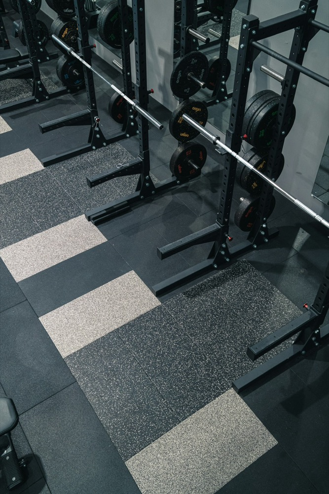

筋トレ
最近は筋肉を大きくすることよりも、体力や持久力をつけることを目的にトレーニングしています。 健康な体を維持しながら、無理なく継続することを大切にしています。
Web Engineer (PHP / Laravel)
UEDA RYOGA
大学2年生
エンジニアインターン希望
高校野球で仲間の挑戦を応援した経験から、人が自ら動き出し、続けられるWebサービスを作りたいと考えています。PHP / Laravel で「book_shelf」「勤怠管理アプリ」を完成させ、今は目標を共有し合うアプリケーション「Your Goal」を開発中です。
本のレビューを投稿し、コメント・いいねで交流できるWebアプリ
PHP / Laravel / MySQL / Docker
詳細を見る →打刻・修正申請・承認・月次レポートまで行える勤怠管理アプリ（REST API付き）
PHP / Laravel / MySQL / Sanctum
詳細を見る →目標の宣言・進捗・達成を共有し、挑戦を応援し合えるSNS型アプリ
PHP / Laravel / MySQL / Fortify
詳細を見る →2025年から、Progate・ドットインストールで HTML / CSS / JavaScript の基礎を学び、既存のWebサイトを手本にした模写コーディングに取り組みました。当時作ったものはデータが残っていないため掲載できませんが、ここで身につけたレイアウトの組み方や見た目の調整が、このサイトを含む今の開発の土台になっています。
HTML / CSS / JavaScript
上田 凌雅 / Ueda Ryoga
Web Engineer (PHP / Laravel)
私は、Webサービスを通じて、人々が自ら行動し、目標に向かって進み続けられる仕組みを作りたいと考え、エンジニアを志望しています。
人が夢に向かって目を輝かせながら努力する姿が好きです。高校野球を通じて、夢を追う楽しさや難しさを経験し、仲間の挑戦を応援することにも大きな喜びを感じました。この経験から、人の挑戦を支える仕事に魅力を感じました。その中で、人の成長を支えるためには、知識や方法を伝えるだけでなく、一人ひとりが自ら行動したくなるきっかけや、継続できる仕組みを作ることが重要だと考えるようになりました。
この考えから、Webサービスを通じて人の行動を後押ししたいと思うようになりました。将来的には、技術力を磨き、自らサービスを企画・開発することで、一人でも多くの人が前向きに挑戦できる価値を生み出したいと考えています。

最近は筋肉を大きくすることよりも、体力や持久力をつけることを目的にトレーニングしています。 健康な体を維持しながら、無理なく継続することを大切にしています。
コーヒーはブラックで飲むのが好きです。 自宅でゆっくり飲んだり、カフェで過ごしたりと、そのときの気分に合わせて楽しんでいます。 コーヒーを飲みながら、将来のことを考える時間がお気に入りです。